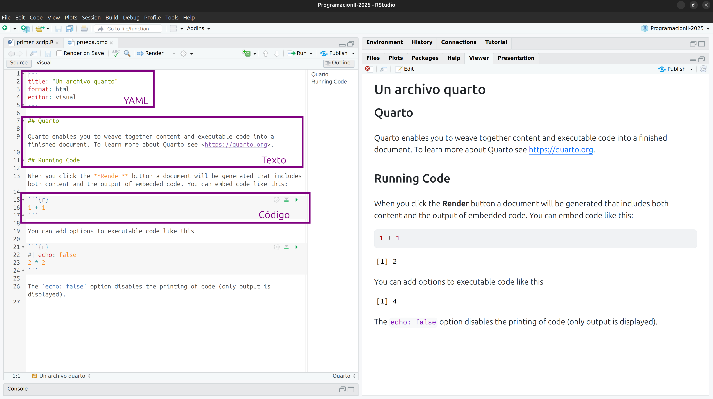

3 Reportes reproducibles con Quarto
3.1 Quarto
Quarto es un sistema de publicaciones científicas y técnicas de código abierto. En particular, los archivos Quarto sos archivos de texto plano, con algunas reglas y una sintaxis especial que nos permite escribir código (de R u otros lenguajes) y texto juntos. Cuando se renderiza (render en inglés), el código se evaluará y ejecutará y el texto se formateará de manera que se cree un informe o documento reproducible que sea agradable de leer y que contenga todo tu trabajo.
Esto es realmente crítico para la reproducibilidad. También nos ahorra tiempo y puede ayudar en las tareas de automatización. Este documento recreará tus figuras por vos en el mismo documento donde estás escribiendo el texto que las explica. Esto ahorra el esfuerzo de hacer un análisis, guardar un gráfico en un archivo, copiar y pegar ese gráfico en Word o Power Point o Google Slides, y tener que hacerlo todo de nuevo después de descubrir un error de tipeo.
Es posible que escuches hablar o encuentres información sobre RMarkdown. RMarkdown funciona igual que Quarto y de hecho es la fuente de inspiración para su desarrollo. La mayor diferencia es que RMarkdown es un paquete de R mientras que Quarto está desarrollado para trabajar con otros lenguajes.
Su estructura y opciones de configuración son las mismas!
Ahora veamos cómo es un archivo de Quarto típico aprovechando la plantilla que se abre por defecto.

Del lado de la derecha vemos el archivo renderizado como html, la la izquierda vemos el archivo de quarto que lo genera.
- Encabezado YAML: Incluye un título y el tipo de salida (que en este caso es un documento HTML). En esta sección se incluye todolo necesario para darle formato aldocumento.
- Debajo hay secciones alternas blancas y grises. Estas son las dos secciones principales que componen un archivo RMarkdown: * Las secciones grises son el código R * Las secciones blancas son el texto de Markdown
3.1.1 Texto markdown
Markdown un es un lenguaje de marcado, usaremos estas marcas para darle formato al texto. Por ejemplo:
- encabezados empiezan con
#o##y asi siguiendo (es importante poner un espacio después del último#y antes de escribir el título). - las palabras en negrita están rodeadas de
** - y las cursiva, con
*
También es posible crear listas (numeradas o no), incluir links, imagenes y código en línea.
3.1.2 Código de R
El código R se escribe dentro de “chunks (bloques)” de código. Los bloques de código comienzan con ```{r} y terminan con ```. En RStudio, podes crear un nuevo chunk con el atajo de teclado Ctrl/Command + Alt + I.
Podemos crear tantos bloques de código como sea necesario, escribir comentarios y modificar el comportamiento del código y los resultados con distintas opciones.
Un conjunto de opciones particularmente importante son las que controlan si el código se ejecuta y si el resultado del código permanecerá en el informe o no:
-
eval: FALSEimpide que se ejecute el código del chunk, por lo que tampoco mostrará los resultados. Es útil para mostrar código de ejemplo si estás escribiendo, por ejemplo, un documento para enseñar R. -
echo: FALSEejecuta el código del chunk y muestra los resultados, pero oculta el código en el informe. Esto es útil para escribir informes para personas que no necesitan ver el código R que generó el gráfico o la tabla. -
include: FALSEejecuta el código pero oculta tanto el código como los resultados. Es útil para configuración general donde se cargan las librerías.
La documentación de Quarto es una excelente guía para aprovechar la flexibilidad de estos documentos.